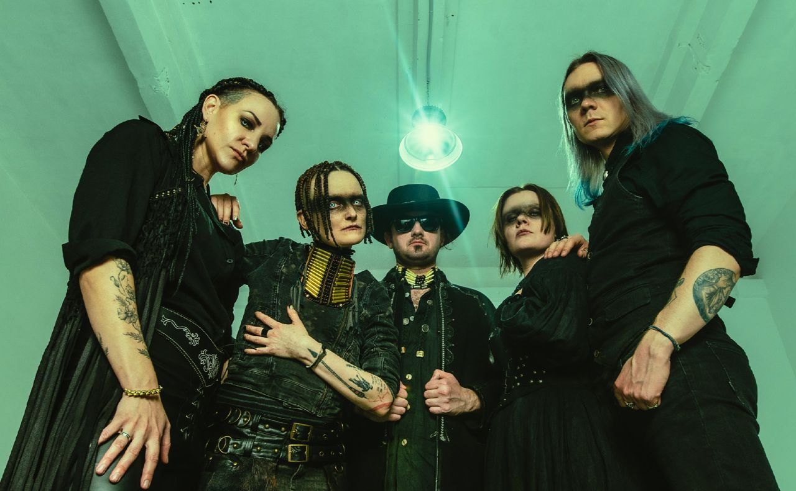

ZWYNTAR (Цвинтар) – український музичний гурт з Києва, що працює на перетині дарк-кантрі, фолку та року. Їхня музика – це атмосферне поєднання глибокого звучання, двоголосся та інструментів на кшталт банджо, що створює впізнаваний, дещо містичний настрій.
У своїй творчості гурт переплітає українські фольклорні мотиви з естетикою американського кантрі, формуючи унікальний стиль із темною, емоційною атмосферою. ZWYNTAR відомі не лише музикою, а й живими виступами, які занурюють слухача в особливий, майже кінематографічний світ.
| Основна інформація | |
|---|---|
|
 |
|
| Жанр | кантрі, фолк, неофолк, рок |
| Стиль | дарк-кантрі, альт-кантрі, фолк-рок |
| Роки | з 2016 |
| Країна | Україна |
| Місто | Київ |
| Мова | українська |
| Склад | Дівуар, Саша Кладбіще, Наталя Ференс, Сергій Pror, Ерік, Tash Twisted, Андрій Павленко |
| Інші проекти | Folkulaka, SkladNo |
Гурт заснували у 2015 році Ерік і Дівуар, за кілька місяців Саша Кладбіще запропонувала разом записати свою стару пісню «Подарила мне мама однажды нож» (укр. «Подарувала мені мама якось ножа») і зняти кліп. Під час запису музиканти об'єдналися в гурт. Кліп виконано в постапокаліптичній естетиці, він отримав масу позитивних відгуків
У 2016 році вийшов перший сингл гурту «Ти не Бог», за яким вийшов EP «Гріх».
14 грудня 2018 року вийшов дебютний альбом колективу – «Мертві голоси». Восени 2019 року музиканти презентували відео на трек «Джонні».
17 червня 2021 року вийшов новий сингл «Дівча». За основу композиції було взято американську народну пісню «In the Pines/Black Girl», що виникла в районі Південних Аппалачах у 1870-х роках
29 жовтня того ж року вийшов сингл «Янголе Небесний»
У 2022 році, після повномасштабного нападу росії на Україну, російськомовний контент (в тому числі відеокліп «Подарила мне мама однажды нож») був видалений учасниками гурту з каналу на Ютуб
13 жовтня 2023 року (у п'ятницю) вийшов другий альбом гурту – «Тисяча очей».
7 грудня 2023 року вийшло перевидання мініальбому «Гріх», з перекладеними українською піснями Чорне дерево та Джонні, які на виданні 2016 року звучали російською. Також гурт випустив анімоване відео на нову версію пісні Чорне дерево.
Окрім «Zwyntar», Дівуар грає детрок у гурті «Old Cat's Drama», банджист Ерік грав дарк-кабаре в групі «Kubrick Cats». Саша Кладбіще добре знана як поет-виконавець і учасниця творчого колективу «Комісар і недобитки», із яким у 2013 році випускала однойменний вебсеріал за мотивами всесвіту Warhammer 40,000 (найвідомішим її твором є пісня «На мою девушку упал космодесантник», кліп на яку входить до складу зазначеного серіалу). Крім того, вона є учасницею дарк-фолк гурту «Folkulaka» і сольного проєкту «SkladNo».
З початку вторгнення в Україну і війни на Сході, а також під час повномасштабного вторгнення, члени гурту, в першу чергу Саша Кладбіще, стали частиною волонтерського руху. І зробили відчутний внесок як в розвиток волонтерської справи в країні, так і у захист України.
У липні 2024 року помер басист гурту Сергій Pror (Вдовиченко).
18 листопада 2024 року гурт разом з учасниками Третьої Штурмової бригади записали спільний кліп на пісню «Золото і блакить» проект «Епоха».
У травні 2025 року студія Квартал-95, отримавши відмову від представників гурту на використання треку «Мексиканець», використала його без дозволу.
30 травня 2025 року виходить міні-альбом «На іншому боці ріки», який складається з чотирьох пісень.
8 серпня 2025 року гурт повідомив про те, що Наталія Золотаревська (відома як Tash Twisted) доєдналась до складу Zwyntar як басистка.
31 жовтня 2025 року гурт провів концерт на честь святкування Хелловін, гурт провів благодійний аукціон на якому вдалось зібрати 1 008 247 грн на потреби ЗСУ.